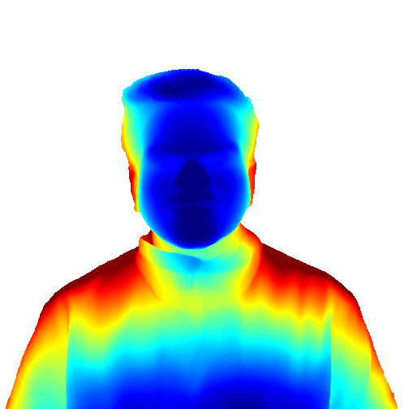
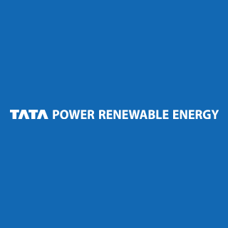
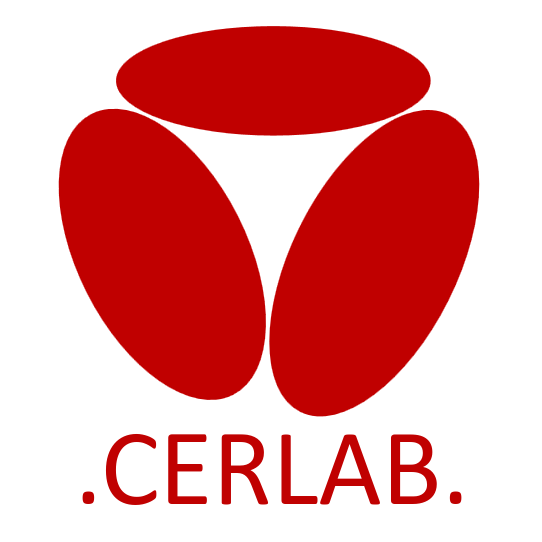
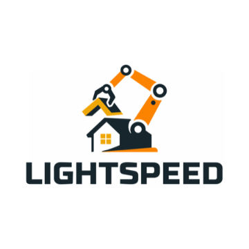
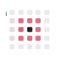
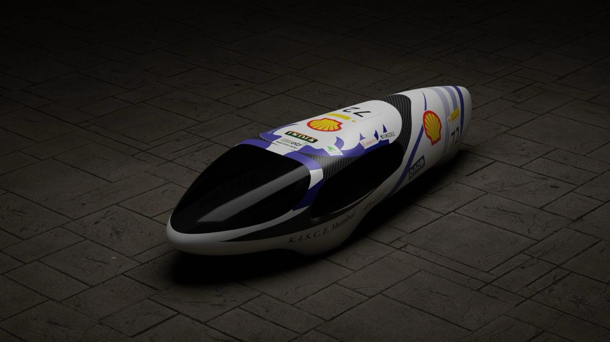

Hi there! I am Vaibhav, and I build robots.
A Master's graduate from Carnegie Mellon University, I'm in love with Robotics because of its many degrees of freedom.
I work across Perception, Navigation, SLAM, Deep Learning, Controls, and Simulation. My research at CERLAB (Computational Engineering and Robotics Laboratory) revolved around solving Perception and Front-end SLAM problems. Little photography and loads (miles) of driving is how I spend my free time.




Research and Projects

Unsupervised Landmark Discovery for Multi-Viewpoint Objects
Master's thesis; extending unsupervised landmark discovery from 2D/frontal datasets to multi-viewpoint objects
Multi-Camera SLAM & Navigation in Isaac Sim
Multi-camera RGB-D SLAM and autonomous navigation for a Clearpath Husky, simulated in NVIDIA Isaac Sim
F1-Tenth Autonomous Racing: Reactive Navigation
Reactive obstacle avoidance and wall following for high-speed 1/10th scale autonomous racing using LIDAR
F1-Tenth Autonomous Racing: Map-based Navigation
SLAM, global path planning, Pure Pursuit, and MPC for optimal lap times on a known track

Multi UAV Search and Rescue
A multi-UAV system for search and rescue in crowded indoor environments using RRT and Next-Best-View planning
Visual SLAM + Navigation for a Custom Robot
End-to-end autonomy stack for a custom mecanum-drive robot using ROS 2, RTAB-Map SLAM, and Nav2 with an Intel RealSense D435
Controller Design for an Autonomous Vehicle
Modern control systems powered by A* path planning and EKF SLAM, simulated in Webots
PointNet: 3D Point Cloud Classification & Segmentation
Point cloud classification and part-segmentation networks built from scratch in PyTorch

AutoTip — Pen Tracking & Writing System
A computer vision system that enables digital writing on any surface using Lucas-Kanade optical flow

Team Eta: Yugant, A Fuel-Efficient Supermileage Vehicle
Led drivetrain design and bodyworks manufacturing for Team Eta's Shell Eco Marathon prototype, achieving 270 km/L